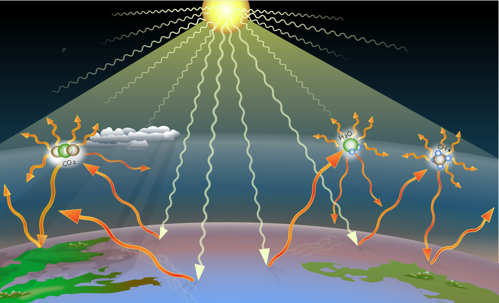
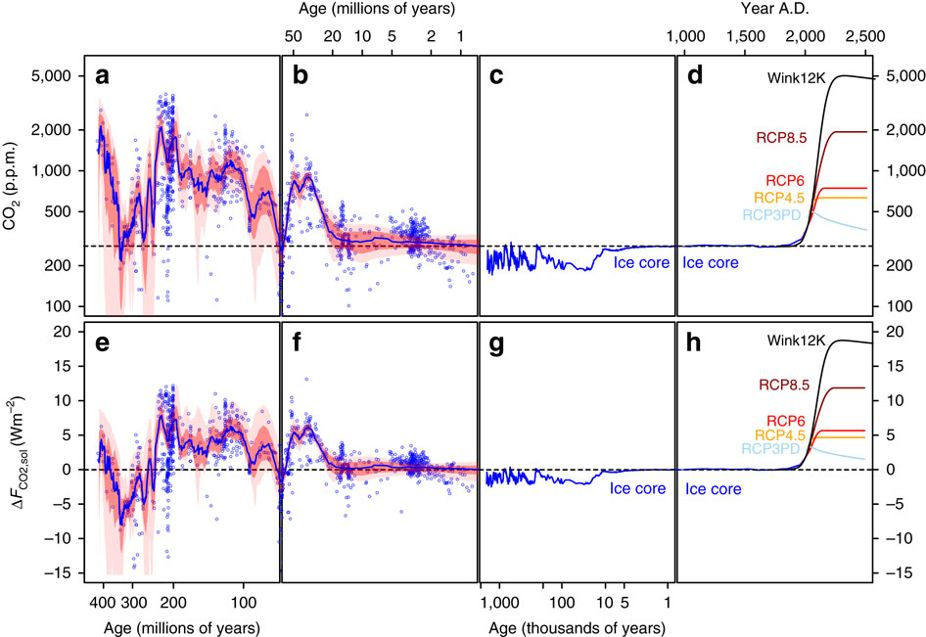

Global #ClimateStrike, Sept 20th 2019
Assembly @ Ashmount Primary School
Hello!
I'm Ben's dad (3G), my name is Thomas.
- hit space to go through this presentation -
Why are we all here today?
Let's start with a quick history of our planet.
We need to go back to 70 million years ago, long before humans inhabited this planet
Back then, in an period called Cretaceous...
dinosaurs still roamed the world
climate was much warmer and humid
oceans were higher and ice caps didn't exist
One of the reasons for warm climate during that time was the high level of greenhouse gases (GHG)
The primary GHGs in Earth's atmosphere are water vapor, carbon dioxide and methane
Greenhouse gases absorb energy from both the sun and the Earth's surface, and emit it back into the atmosphere
For millions of years, trees have sucked carbon dioxide from the atmosphere
storing carbon in wood while growing, and releasing oxygen in the air
then dying and going underground to transform, becoming coal and oil
Fast forward 70 million years, from the last Triceratops and T-Rex
to 1750!
Our planet had substantially cooled off from the Cretaceous period
And something beautiful was about to happen...
The industrial revolution
Europe and the United States went from hand production methods to machines
We started using machines powered by steam
We invented new processes to produce iron
During the following 250 years, until now
We've become richer, healthier and longer living
The population has increased from ~1Bn to ~8Bn and moved to the cities
We need bigger buildings, more food, more cars, more Playstations! 🤩 🏢 🌭 🚗 🎮
All of this comes at a price...
We need more energy, a lot of it
So we use what we have readily available:
coal, gas and oil, AKA fossil fuels
So, here's the problem
We are taking carbon from undergound, where it has been stored for millions of years
We burn it with oxygen, releasing carbon dioxide to the atmosphere
All these GHGs warm the planet, bringing back the clock to the dinosaurs period
Ice caps will melt, oceans will rise, deserts will expand, and there are now ~8Bn of us on Earth
How do we stop it?
we need to stop burning fossil fuels, and start capturing greenhouse gases from air
and we need to do it pretty fast! we have about 15 years to change and avoid the worst consequences of climate change
So, where do we start?
Everywhere! reasons for climate change are evenly spread across all sectors
- Electricity: 25% - powers your 📺
- Agriculture: 24% - every ingredient in your 🍔
- Manufaturing: 21% - all your 🕹️and ⚽
- Transportation: 14% - your family 🚘
- Buidings: 6% - your 🏠
Now the good news:
no one is too small to make a difference!
Transportation
Use public transport, walk to school, reduce use of private vehicles to a minimum
we are producing more electric cars, but we will need 10x more energy, where is it going to come from?
Buildings and heat
have a shower instead of a bath, use warmer clothes during winter, improve insulation at home, get rid of natural gas for heating systems if you can
"electrification of heat" is happening, but we will need 10x more energy, where is it going to come from?
Electricity is key
We need to use alternatives to fossil fuels:
wind, sun, rivers, oceans and nuclear
and we need to find better ways to store this energy
Manufaturing (making things)
Reduce single use plastics wherever you can
Think before you buy!
Kinder eggs, bottles of water, pasta, toothpaste, shampoo, toys, vegetables.
All is wrapped in plastic
Agriculture (farming)
Try to eat mainly plants, eat less meat,
try to avoid beef and dairy
Join the action!
here just a couple of examples:
Plastic Patrol: a global movement to clean up the planet from plastic
Trees for Cities: a UK charity working to improve lives by planting trees
Ask questions!
climate change is a complex matter: read, watch videos, investigate, don't trust without thinking
even all the things I just said, are they all true?
I'm sorry about this situation,
we messed this up. I did.
Your parents and grandparents did.
And now we need your help to fix this mess.
So back to my initial question:
Why are we all here today?
We are here because we want our voices heard
We want all governments on Earth to do something for climate change NOW
And we need your voices to be heard among everybody else's
We are here because we raise all our voices together in a #ClimateStrike
This is your chance to make your voice heard
you are part of the movement that empowered all children to tell adults the truth.
You can join the strike today at 11am from school
to tell everybody that change is coming, whether we like it or not!
watch Greta Thunberg speech at UN Climate Change COP24 Conference
You know, I am a big fan of Marvel movies
and one of my favourite super heroes is Black Panther
I see him, and the place where he lives, and it gives me hope
I have this image in my mind of a beautiful city in the future that lives in harmony with nature
Let's build a bright future together
Let's build Wakanda.
References
for the full list, please visit the notes page
below here some extracts with images
Humanity’s fossil-fuel use, if unabated, risks taking us, by the middle of the twenty-first century, to values of CO2 not seen since the early Eocene (50 million years ago)
Source: Nature
Human activities since the beginning of the Industrial Revolution (around 1750) have produced a 45% increase in the atmospheric concentration of carbon dioxide (CO 2), from 280 ppm in 1750 to 415 ppm in 2019. [...]
The vast majority of anthropogenic carbon dioxide emissions come from combustion of fossil fuels, principally coal, oil, and natural gas.
Source: Wikipiedia
By burning coal, oil, and natural gas, we accelerate the process, releasing vast amounts of carbon (carbon that took millions of years to accumulate) into the atmosphere every year.

Source: NASA's Earth observatory
Ethical considerations, and the principle of equity in particular, are central to this report, recognizing that many of the impacts of warming up to and beyond 1.5°C, and some potential impacts of mitigation actions required to limit warming to 1.5°C, fall disproportionately on the poor and vulnerable (high confidence)
Source: IPCC special report
To prevent the worst effects of climate change, we need to get to zero net greenhouse gas emissions in every sector of the economy within 50 years—and as the IPCC recently found, we need to be on a path to doing it in the next 10 years.
Source: Gates Notes
Credits
Greenhouse gases - Image courtesy: A loose necktie - Own work, CC BY-SA 4.0, Link Forest - Photo by Sebastian Unrau on Unsplash Steam train - Photo by Keith Bremner on Unsplash Tokyo 1 - Photo by Fabrizio Chiagano on Unsplash Refinery - Photo by zhao chen on Unsplash Westminster - Photo by Aron Van de Pol on Unsplash House - Photo by Scott Webb on Unsplash Wind turbines - Photo by Nicholas Doherty on Unsplash Tokyo 2 - Photo by Jezael Melgoza on Unsplash Field - Photo by Jörg on Unsplash Bicycles - Photo by Everton Vila on Unsplash Bookshelves - Photo by Laëtitia Buscaylet on Unsplash